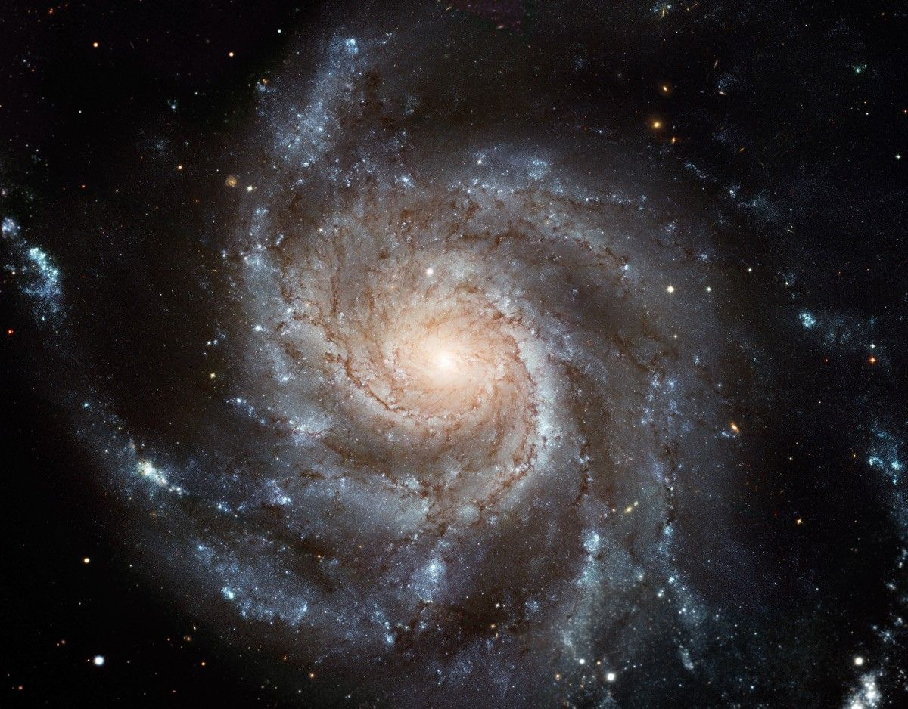
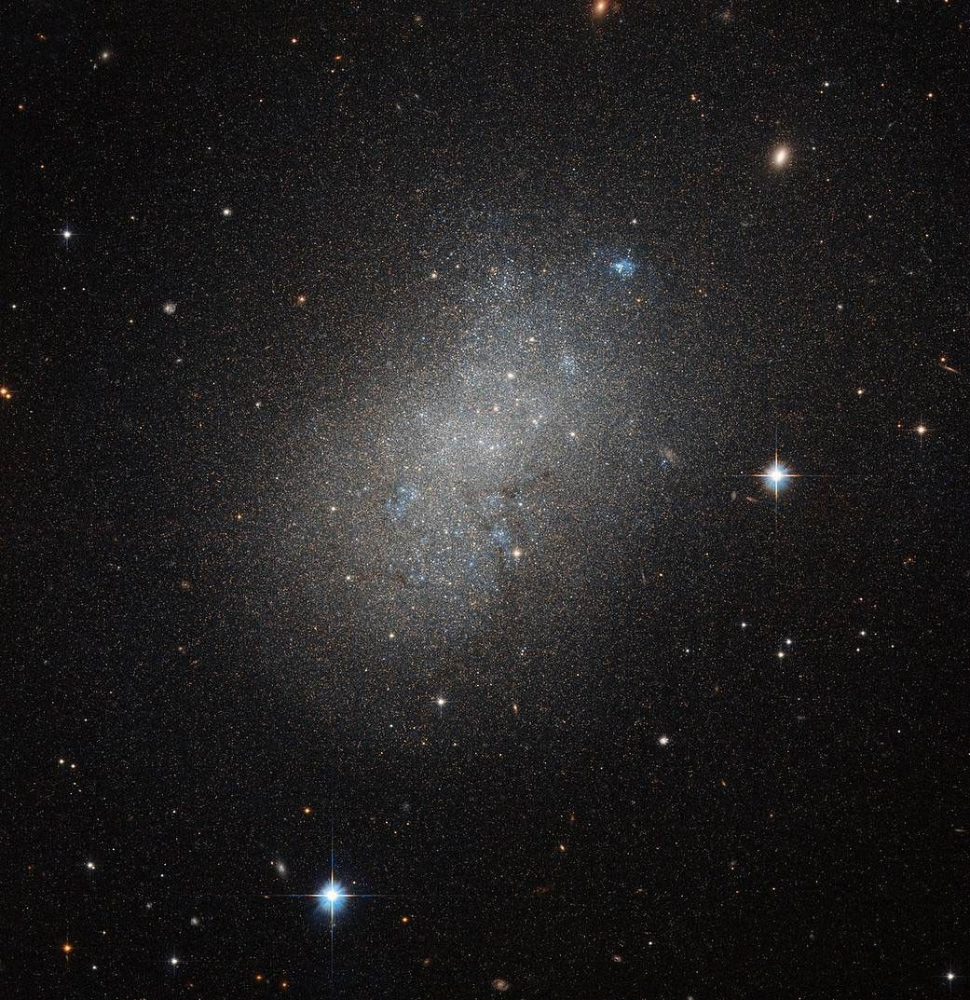

ENG0018 Computer Laboratory 2025/26
Student URN: 123456
Abstract
This paper explores the fascinating process of galaxy formation, from the initial clouds of gas and dust to the diverse structures we observe today. We examine the crucial role of dark matter in shaping galaxies, analyze the three main types of galaxies (spiral, elliptical, and irregular), and discuss both computational and observational methods used to study galaxy formation.

Introduction
Today there exists many billions of galaxies. How did they form? To answer that question, over many years astronomers have used the fundamental laws of physics to deduce the basic story of galaxy formation. The formation process had begun with huge clouds of gas and dust. As these clouds collapse under gravity, the gas becomes denser and heats up, leading to the formation of stars. Overtime, smaller galaxies collide and merge which allows them to grow into large structures.

Formation and the role of dark matter
As mentioned already, galaxies formed from an initial gas cloud, followed by star formation and then ending in merging and growth (hierarchical merging). Dark matter has played a big role in galaxy formation. It is an invisible form of matter whose total mass in the universe is roughly five times that of "normal" matter (i.e. atoms). It acts as a scaffolding of the universe and the visible matter simply collects inside of that scaffolding, In the form of stars and galaxies. Dark matter does this, by clumping together; in which small objects form first and are drawn together to form larger ones.
The 3 Types of Galaxies
Spiral Galaxies:
The formation of a spiral galaxy occurs through hierarchical merging of smaller galaxies and the formation of a rotating disk. Matter is distributed almost uniformly in space, however because small density fluctuations exist, matter Is gradually collected by the gravity from parts with a higher density. Over time, the gas density becomes high enough and stars are born, forming small galaxies. These small galaxies then merge with each other, creating even larger galaxies.
During the process of merging, a disk is formed, and stars are born into this disk. As small galaxies pass around the periphery of this disk, the effect of their gravity create a spiral structure in the disk.
The galaxy we live in, the milky way, is an example of a spiral galaxy.
Elliptical Galaxies:
Elliptical galaxies, unlike spirals, usually contain little gas and dust and show very little organization or structure. The stars formed, orbit the core in random directions and are generally older than those in spiral galaxies, since little of the gas needed to form new stars remains. In terms of their exact origin, it is believed that they come from collisions and mergers with spirals. When two galaxies collide, it's because of gas clouds being compressed, leading to new star formation.
Irregular Galaxies:
Irregular galaxies have unusual shapes and range from dwarf irregular galaxies with 100 million times the sun's mass to large ones weighing 10 billion solar masses. What causes these irregular shapes? Astronomers think that these galaxies' odd shapes are sometimes the result of interactions with others. For instance, one spiral galaxy passing with a stronger gravitational pull could lose some of its material, causing it to become distorted and have a new shape.

Different methods carried out for the study of galaxy formations
Computational methods:
- Researchers build sophisticated computer models to simulate the formation and evolution of galaxies, including the roles of dark matter, gas, and stars.
- The use of semi-analytic models that combine different types of physics and data to create a hybrid approach for simulating galaxy formation
- There are currently new techniques being developed to simulate specific processes, such as star formation in extreme environments or the feedback effects of black holes on their galaxies
Observational methods:
- Astronomers can use the finite speed of light to their advantage. By observing distant galaxies, they are essentially looking at snapshots of the universe in its early stages, directly seeing galaxies as they were forming and evolving.
- By analysing the chemical content, kinematics, and distribution of stars and gas in our own and nearby galaxies, astronomers reconstruct their formation history.
References
Angluin, D (1988), Queries and concept learning. Machine learning 2, (4), 319-342.
Brinker, K (2003), Incorporating Diversity in Active Learning with support Vector Machines,
Proceedings of the Twentieth International Conference on machine learning( ICM-2003).
Bruzzone, L, Chi, M and Marconcini, M (2006), A novel transductive SVM for emisupervised classifcation of remote-sensing images,
IEEE Transactions on Geoscience and Remote Sensing, 44, (11), 3363.
Bruzzone, L and Persello, C (2009), Active learning for classification of remote sensing image.
In: Geoscience and Remote Sensing Symposium,2009 IEEE International, IGARSS 2009, 3.
Campbell, C, Cristianini, N and Smola, A (2000), Query learning with large margin classifiers.
In: Proc. 17th Internat. Conf.on Machine Learning. Morgan Kaufman, Stanford, CA,111-118.